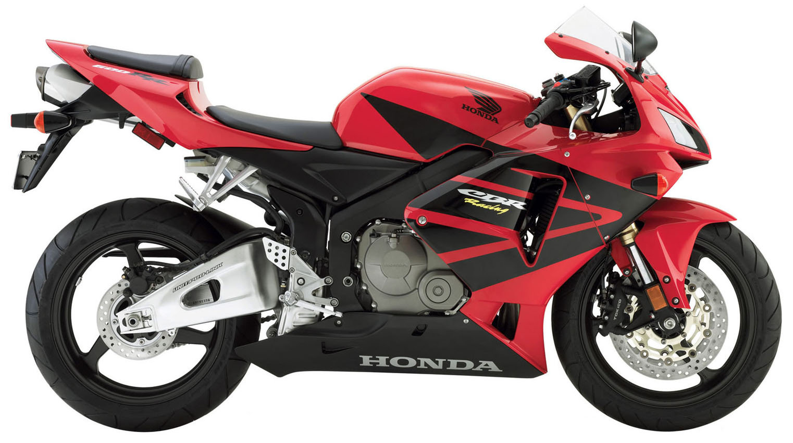
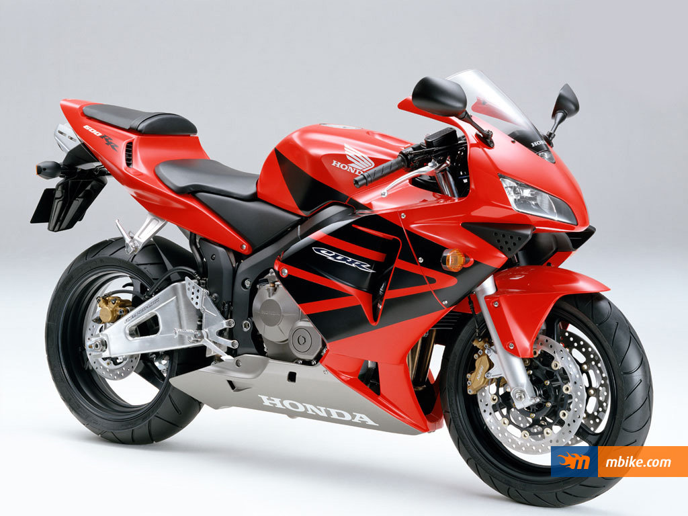
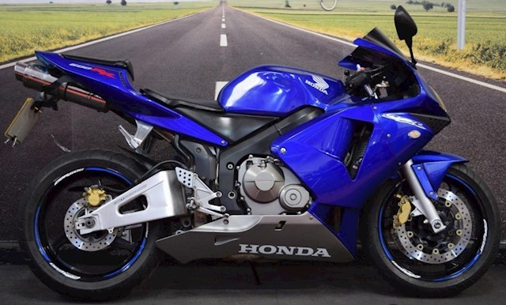
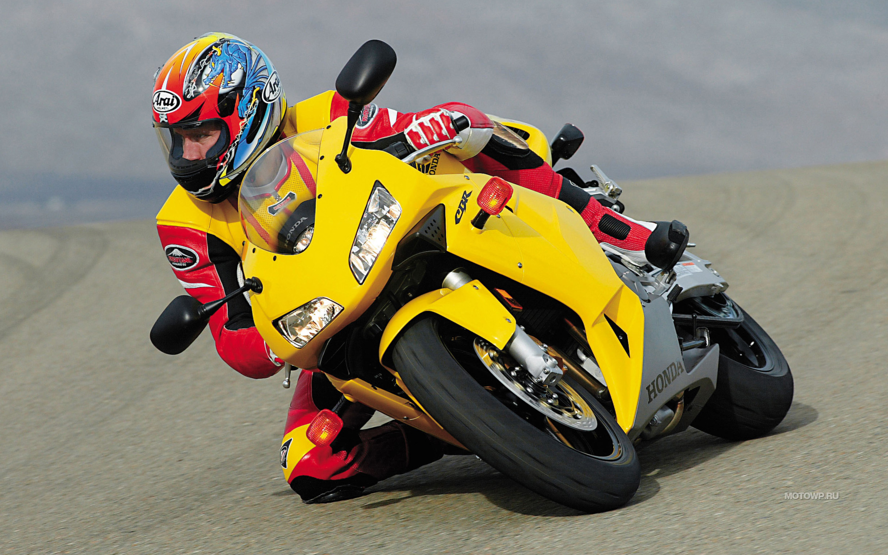
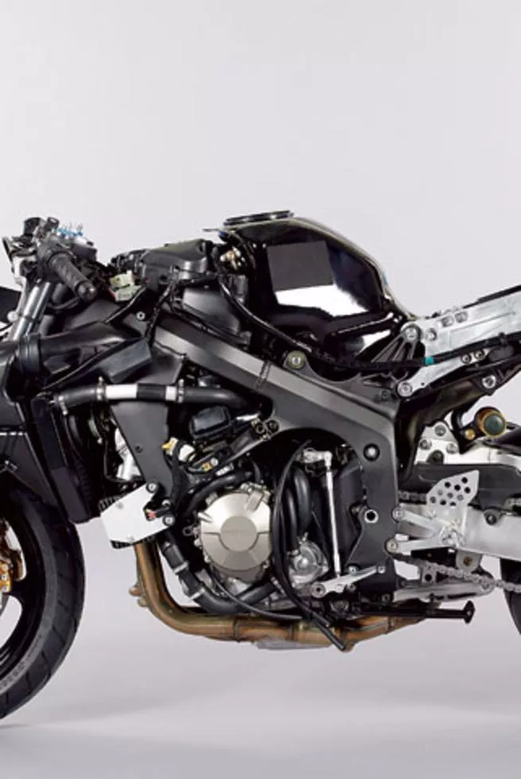
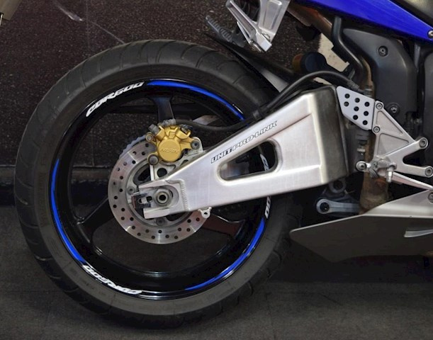
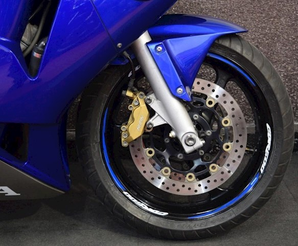
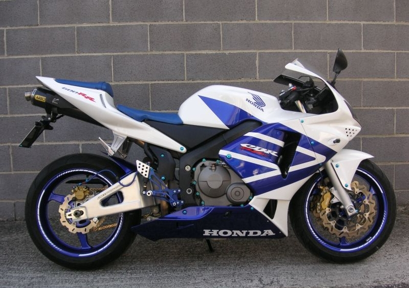
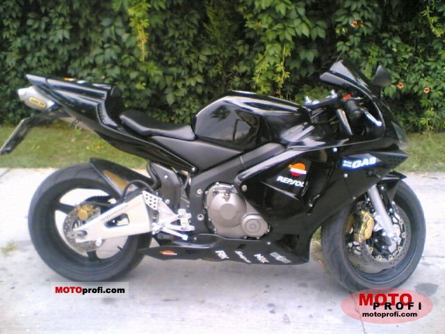
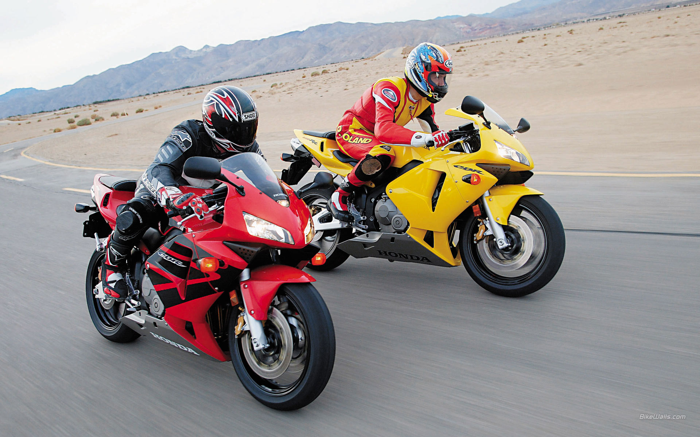

Feel the power
Honda CBR 600 RR
When people look back on the history of motorcycling 2003 will be recoded as the year of the Supersport 600. Not only did Kawasaki launch the iconic ZX-6R B1, Honda unveiled the CBR600RR – a bike that broke 15 years of tradition.
The CBR600 was always designed as a ‘do it all’ sports bike. The name CBR stands for City Bike Racing and from the day the first ‘jelly mould’ appeared in 1987 the whole ethos of the brand has been ‘win on Sunday, pop to the shops on Monday’, this all changed in 2003. Having dipped their toe in the high performance end of the supersport class in 2001 with the CBR600F Sport, which was little more than a tweaked CBR600F, Honda went all in for 2003 with the CBR600RR – the first true race replica CBR.
On track the combination of the stunning chassis and rev-happy engine made for a one of the sweetest handling bikes on the market. It decimated the opposition and brought a whole new level of agility to the supersport class. However on the road it was a very different story.Cramped, lacking in bottom end and too track focused, this was as far removed from the traditional CBR ethos as you could get. Honda had made the RR for one purpose – to win on track – and if you didn’t like this then you could always buy the CBR600F, which was still being made in parallel with the RR version.
It is a testament to just how right Honda got the original CBR600RR that the subsequent updates essentially just gave the bike more mid-range grunt. The chassis has remained largely unchanged (the 2007 update is the most significant advancement) and the bike still looks pretty similar. This model kick-started the whole supersport war that escalated through the 2000s and resulted in some of the most technologically advanced bikes we have yet seen. Did it succeed in its task? Having won seven of the last ten World Supersport titles you have to say it did.
To see Honda Honda CBR 600 RR video review click here
- Years: 2003-2004
- Power: 107.2 hp
- Top speed: 251 km/h
- Dry weight: 170 kg
- Engine type: inline-4
- Frame: Aluminum i








